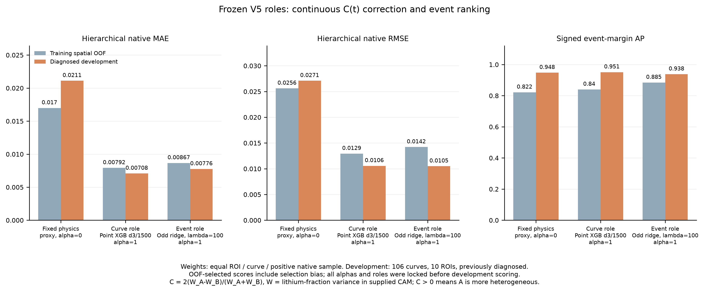
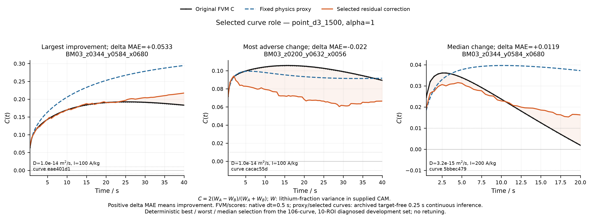

Learning contact-pattern contrast curves
Learn the residual of a physical proxy for C(t) = 2(WA − WB)/(WA + WB), the paired concentration-variance contrast.


| Development model | MAE | RMSE |
|---|---|---|
| Physical proxy | 0.021111 | 0.027093 |
| Curve residual model | 0.007080 | 0.010565 |
| Event residual model | 0.007755 | 0.010496 |
Result scope
The 10 development ROIs were examined in earlier diagnostics and are not a fresh blind test. Lower curve error does not establish a reliable gain in reversal-event ranking. BM10 targets remained sealed.